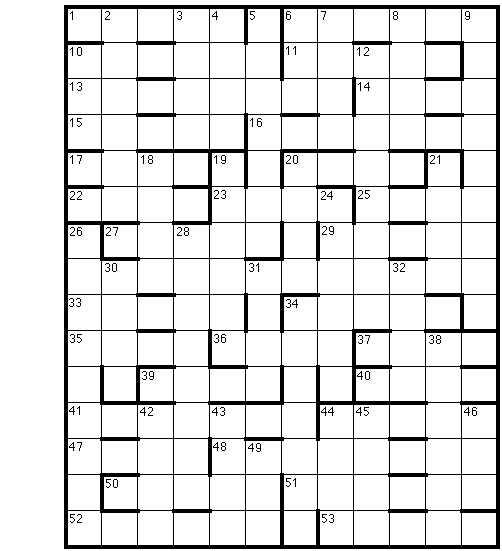

Predator
There is a ravenous
creature about, hidden so that he cannot be seen -- only heard. When away
from his lair, he feeds wherever he can, so you can see numerous victims
of his hunger; just look down. If you do so you may in addition spot one
group of his prey who, though also hidden, were each ensnared by the sound
of the creature's voice. (Alas, they couldn't hide the way he does . .
.)

ACROSS
1. Second-born has
right to act snobbish (5)
6. Sad film depicting tart? (6)
10. Pair of topless clones is good for everyone (3-3)
11. Beheaded one bad actor in Jurassic Park (5)
13. Kinnear has near-perfect woman over for springtime activity (8)
14. Soft wintertime nuisance (4)
15. Fool like Anaïs? (5)
16. Lunatic she'd hit doth gossip? (7)
17. Psychic power needed to start cable channel (4)
20. Irreverent, loud backtalk (4)
22. Those people from the club (4)
23. He rubs skin of that woman (4)
25. Putting away doughnuts, grow to full heft (2, 2; abbr.)
27. A clown named Bill appears in their window (5)
29. Crossing time, I jinx fin-de-siècle Japan (5)
33. Thinks of W. Shakespeare's evenings (5)
34. Sound used to be noise (5)
35. One's new shirt doesn't exist (3'1)
36. Source of yours truly (4)
37. Alien investigators will surround Neptune's foremost hotels (4)
39. Overturning cans in anger (4)
40. Selection of pitches you and I intoned for New Zealander (4)
41. See sign-off starting (7)
44. Referred to on-location report (5)
47. Supplied endless instances of viral infection (4)
48. Left to avoid after-school activity plan (8)
50. Tilts in jousting arenas (5)
51. Wild about carbon steel picks (6)
52. About eight hours after one conversation between Pythonian knights
and librarian? (6)
53. They beat the deuce out of platters, noisily (5)
DOWN
2. No folks from the
Emerald Isle like The Maltese Falcon?
3. Exactly one actress in Scream is upset
4. Smart when one drops saline
5. You finally note and identify lair without being asked
6. "Austria's capital" -- writing "A" for that is how a word-puzzler is
known
7. For example, penetrating energies for brain scans (abbr.)
8. Endlessly begged to remain an underclassman
9. Study of the beautiful antennaed superhero almost gets suppressed by
SMERSH's leader
10. Something one can't achieve: victory over a bad alien poet
12. Daughter of Agamemnon is one cooking hag in pie
18. Pure, wild country
19. Seen in bronchi as minor anatomical intersection
20. Scared of a strong attack
21. Plant extract a vehicle carried north for native of southwest
24. After a bit of bridge that woman is less agitated
26. Jabba's employee captures five playful fungi enjoying themselves
28. Vets scan an incomprehensible void
30. Soles besmirched with loamy soil
31. Dry champagne masks one anatomical noise
32. School conducted one-on-one by a Muse
34. Very one to be, presently, barely there!
38. Coward timidly, gutlessly keeps opposing whatever is new
42. Overturned bread container to make a point
43. Supersonic jets ship tons (abbr.)
44. Also upset about bit of animation showing carnivorous beast
45. One who waits with jittery bride
46. Trash-dumping Rhode Island socialites
49. British brainthumper involves a hyperbolic trig function
|